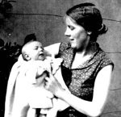
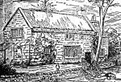
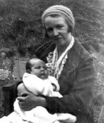

Wigglesworth and Riley family history
Local history covering Dethick, Lea & Holloway, and northern Matlock (Derbyshire) and Florence Nightingale
| Wigglesworth | WIGGS | Riley | Local history | Links |
| Wigglesworth |
| WIGGS |
| Riley |
| Local history |
| Links |
| Contact |
 |
Elsie Wigglesworth holding her son and author to be George |
Latest update, November 2010, new booklets, Florence Nightingale's life in Holloway.
Latest update, November 2010, new Childhood Memories of Dethick, Lea and Holloway.
Advancing years seem to have given the inclination, and retirement the opportunity, to review the past and to record it. Thus Margaret and George Wigglesworth have pursued both localities and their families histories and gathered them into brief booklets with a very limited circulation. The electronic age allows some of these to be made accessible to more and interested readers.
 |
The third Wigglesworth Hall by Judith Hubbard |
George’s "family history" covers both his known forebears and the more widely ranging aspects of the Wigglesworths in general and the Manor bearing that name.
 |
Cowley Cottage, also known as The Manor House, Lea |
He started local history when trying to find out about the Hat Factory previously operating where his new abode had been sited. The subsequent investigations concentrated on the Derbyshire villages of Dethick, Lea & Holloway, followed by the northern part of Matlock. His formative discovery was how much local history quickly became unknown by many even when printed only a hundred years ago and his writings are intended to re-publicise this. He makes no claim to be a historian!
 |
Gladys Riley with her first daughter Margaret |
Margaret began her researches into family history out of curiosity about her great-grandfather, Charles Hezmalhalch Pounder. In time this led to a booklet about all the known Hezmalhalches from the late sixteen hundreds to the present day. Research into other families has proceeded somewhat spasmodically and to date only three other booklets have been produced, one about her mother Gladys Riley, one about her maternal grandmother's family, the Mallons, many of whom were railway engine fitters in Manchester, and one about the early life and schooling of her father, Denis Riley. Both her parents lived well into their nineties and she will probably need to live as long if the various projects under way are to be completed.